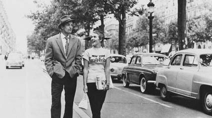

Breathless, Publicity Still (Jean Seberg and Jean-Paul Belmondo)
Jean-Luc Godard · 1960 · Publicity still, black and white
In copyright. Look and learn: shown for study, not for download.
This publicity still was taken by the set photographer Raymond Cauchetier. Jean-Luc Godard shot his first feature in 23 days, from 17 August to 12 September 1959, without permits, with Raoul Coutard on a hand-held camera and almost no lighting. Instead of a dolly, Godard often pushed Coutard in a wheelchair, and for some street scenes Coutard hid in a postal cart under a pile of packages. Jean Seberg was paid $15,000, a sixth of the budget.